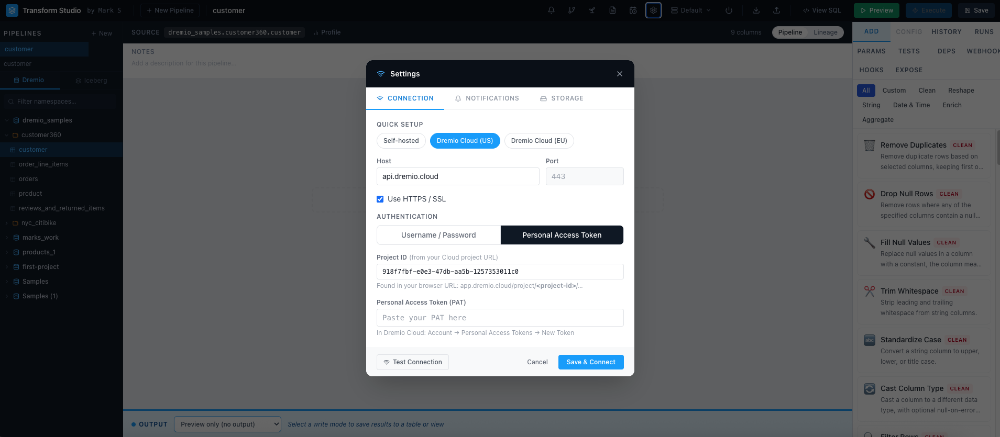
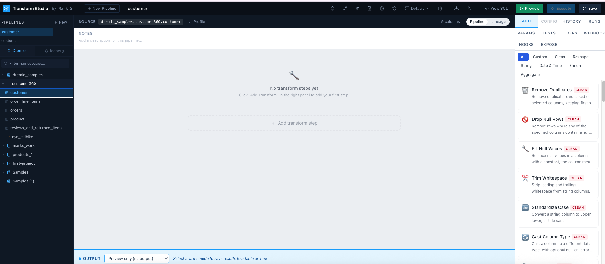
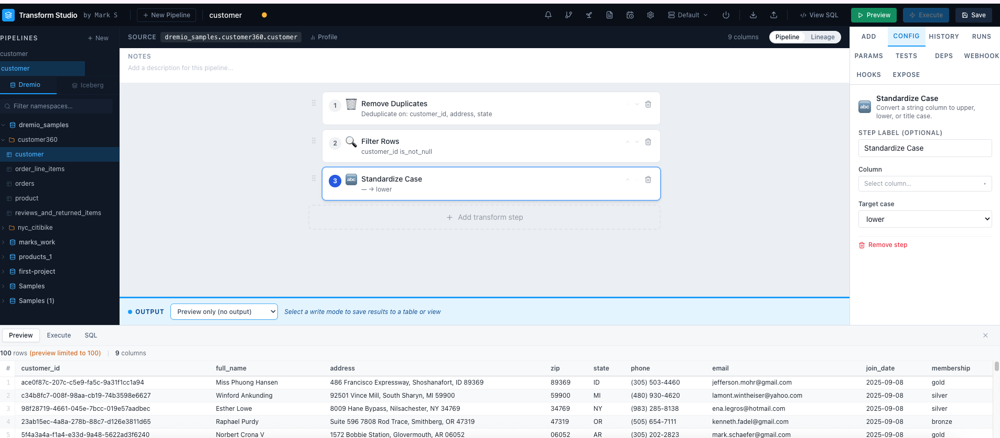
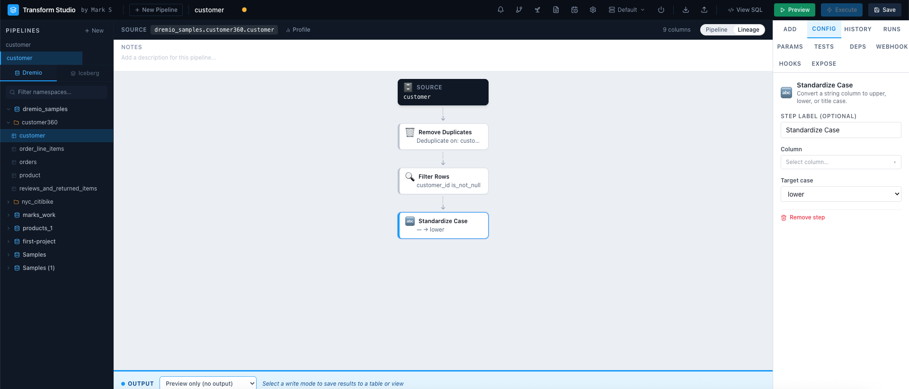
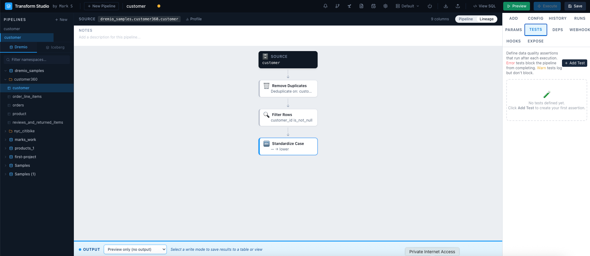
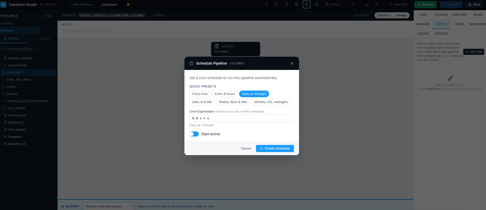
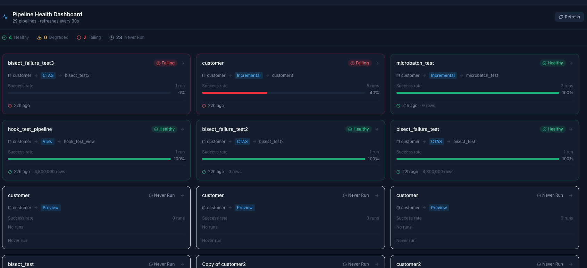
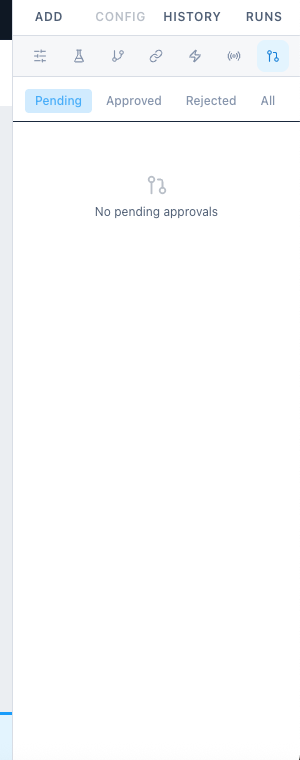

🖥
Main interface screenshot
A
Pipeline List (left panel)All your saved pipelines. Click any pipeline to open it. Use + New to create one. Search appears automatically when you have 5+ pipelines.
B
Catalog Browser (left panel, below pipelines)Browse your Dremio namespaces and tables. Toggle between Dremio and Iceberg catalogs. Click any table to set it as the pipeline source.
C
Pipeline Builder (center)Your transform steps appear here as cards, top to bottom. Drag the grip handle on the left to reorder steps. Click a step to configure it.
D
Configuration Panel (right)Primary tabs: ADD (browse transforms), CONFIG (configure the selected step), HISTORY (version history), RUNS (execution log). Below those, an icon strip gives quick access to: Params · Tests · Deps · Webhook · Hooks · Expose · Reviews — hover any icon to see its tooltip.
E
Toolbar (top)Pipeline name (editable), environment switcher, action buttons. Preview runs a SELECT without writing data. Execute writes the output table.
Toolbar Quick Reference
📊 Dashboard
🔔 Alerts
⚡ Run w/ Deps
🔧 Settings
📄 Docs
⚙️ Connection
Default ▾
⬇ Import
⬆ Export
View SQL
▶ Preview
⚡ Execute
💾 Save
Right Panel Tab Layout
⚙Params
🧪Tests
⑂Deps
🔗Webhook
⚡Hooks
📡Expose
✔Reviews
The primary row (ADD / CONFIG / HISTORY / RUNS) stays visible at all times. The icon strip below gives one-click access to pipeline settings panels — hover any icon to see its full name.
💡
Tip: Hover over any toolbar or panel icon to see a tooltip describing what it does.

🔌
Connection Settings modal screenshot
Open SettingsClick the ⚙️ icon in the top toolbar to open the Settings modal.
Choose a presetClick Dremio Cloud (US), Dremio Cloud (EU), or Self-hosted to pre-fill the host, port, SSL, and auth type.
Enter credentialsFor Dremio Cloud: paste your Personal Access Token (PAT) and your Project ID (found in your Cloud URL). For self-hosted: enter username and password.
Test & SaveClick Test Connection to verify, then Save & Connect. The catalog browser refreshes automatically — no page reload needed.
📍 Finding your Project ID
In Dremio Cloud, look at your browser URL:
app.dremio.cloud/project/YOUR-ID-HERE/…
Copy the UUID portion and paste it into the Project ID field.
🔑 Creating a PAT
In Dremio Cloud:
Account menu → Personal Access Tokens → New Token
Give it a name, set an expiry, and copy the token value. It's only shown once.
ℹ️
Credentials are persisted. Your connection settings (including the PAT) are saved to the local SQLite database and restored automatically on every restart. You only need to enter them once.

🏗️
Pipeline builder with source table selected
Create a new pipelineClick + New Pipeline in the top toolbar, or + New in the pipeline list sidebar.
Select a source tableIn the left panel, expand a namespace in the Catalog Browser and click any table. The center panel updates to show the source as the starting node.
Name your pipelineClick the pipeline name in the toolbar (default: "Untitled Pipeline") to rename it. Press Enter to confirm.
Set the outputIn the CONFIG tab on the right, select your Output namespace (Dremio space or folder, including nested subfolders) from the dropdown, then type the table name. The full path is shown as a preview below the field. Also set your Output mode (Preview, CTAS, Insert, View, Incremental).
SaveClick Save in the toolbar. Every save creates a new version — you can restore any prior version from the HISTORY tab. If another pipeline already has the same name, a warning dialog appears — you can rename it or save anyway.
💡
Tip: Use Duplicate (right-click a pipeline in the list) to clone an existing pipeline as a starting point for a new one.
ℹ️
Unsaved changes indicator: A yellow dot appears next to the pipeline name in the list when you have unsaved changes. It disappears after saving.
🔧
Transform library and configured step
Click the ADD tab on the right panel to browse all 52 available transforms organized into 7 categories.
🧹
Clean (14)
Remove duplicates, fill nulls, trim whitespace, validate regex, cast types, filter rows, clip values, standardize case.
🔄
Reshape (9)
Join tables, union, split/combine columns, add columns, reorder, unpivot, flatten JSON.
📅
DateTime (5)
Parse dates, extract parts (year/month/day), truncate, calculate date differences, add/subtract intervals.
✨
Enrich (10)
Lookup joins, map values, bin/bucket values, row numbers, running totals, conditional columns, lag/lead, percent of total.
📊
Aggregate (5)
Group & aggregate, top-N per group, rolling windows, sample rows, SCD Type 1 upsert.
🔤
String (8)
Extract with regex, pad, substring, length, upper/lower, concatenate, hash columns, generate surrogate keys.
💻
Custom SQL (1)
Full-screen SQL editor with {input} placeholder. Save snippets to the template library for reuse.
Working with Steps
↕
Reorder stepsDrag the grip handle (⋮⋮) on the left side of any step card up or down to reorder. Or use the ↑↓ arrow buttons.
🗑
Delete a stepClick the ✕ button on the right side of the step card. The pipeline automatically recomputes downstream columns.
👁
Preview mid-pipelineClick any step card to select it, then click Preview. The preview shows results up to and including that step, not the full pipeline.

👁️
Preview results with data grid
▶ Preview
Runs a SELECT against Dremio and shows the first 1,000 rows in the bottom panel. Does not write any data. Fast and safe to run at any time. Results appear in the SQL / Preview tab at the bottom.
⚡ Execute
Writes the pipeline output to Dremio. Behavior depends on the output mode: CTAS creates/replaces a table, Insert appends rows, View creates a virtual view, Incremental merges or appends changes.
Output Modes
P
Preview modeNo output table is written. Use this while iterating on your pipeline logic.
C
CTAS (Create Table As Select)Creates or replaces a table with the full pipeline output. Best for most use cases.
I
InsertAppends new rows to an existing table. No deduplication.
V
ViewCreates a Dremio virtual view. Queries run on the fly — no data is copied.
⟳
IncrementalSmart updates: Merge upserts changed rows (Iceberg), Append adds only new rows by timestamp, Microbatch processes data in time-window chunks.
⚠️
Pre/Post hooks: If your pipeline has pre-hook SQL configured, it runs before Execute. A pre-hook failure will abort the execution. Post-hook failures surface as warnings but don't mark the run as failed.

🔀
Lineage DAG view screenshot
Click the branch/lineage icon (↗ arrows) in the toolbar to switch from the step list to the visual DAG view.
📦
Source node (blue)Your input table from Dremio. Shows the full namespace path.
🔧
Transform step nodes (amber)Each step in your pipeline. Steps are connected in order, top to bottom. Click any node to select and configure that step.
📤
Output node (green)The destination table or view. Shows the output mode badge (CTAS / INSERT / VIEW / INCREMENTAL).
🔍
Column-level lineageClick Column Lineage below the output node to expand per-step column mappings — shows which source columns contribute to each output column.
📊
Exposures (indigo)Downstream BI tools that consume this pipeline's output. Add them in the EXPOSE tab. They appear as indigo cards below the output node.
💡
Cross-pipeline DAG: Click the pipeline graph icon (⬡) in the top toolbar to see how all your pipelines connect to each other — showing upstream dependencies and downstream consumers across your entire workspace.

✅
Tests panel with defined tests
Click the 🧪 Tests icon in the right panel icon strip to define data quality checks. Tests run automatically after every successful Execute.
🚫
not_null
Fails if any row has a NULL in the specified column.
🔑
unique
Fails if the specified column contains duplicate values.
🔢
row_count_between
Fails if the output row count falls outside a min/max range.
📋
accepted_values
Fails if a column contains values outside an allowed list.
🔗
relationships
Fails if column values don't exist in a reference table (referential integrity).
💻
custom_sql
Write any SQL that returns rows on failure. Full flexibility for complex checks.
Test Options
🚫
Severity: errorFailing tests with error severity block the pipeline from completing. The run is marked as failed.
⚠
Severity: warnFailing tests with warn severity surface as warnings but don't fail the run. Good for informational checks.
🔍
Where filterAdd a SQL WHERE clause to scope a test to a subset of rows. e.g. status = 'active' to only check active records.
📁
Store failuresWhen enabled, failing rows are written to a _failures_{test_name} table for inspection. An orange badge in the Tests panel shows the table name — click to copy it.

🗓️
Schedule modal screenshot
Open the schedule editorClick the 🗓 calendar icon in the toolbar to open the Schedule modal for the current pipeline.
Enter a cron expressionUse standard 5-field cron syntax: minute hour day month weekday. Examples: 0 6 * * * (daily at 6am), 0 */4 * * * (every 4 hours), 0 9 * * 1 (every Monday at 9am).
Enable the scheduleToggle the schedule on. The scheduler checks every 60 seconds and fires any overdue schedules.
Monitor runsOpen the RUNS tab in the right panel to see the execution history, status (success/failed), row counts, and error messages.
ℹ️
Webhook triggers: Every pipeline also has a unique webhook URL. Use the WEBHOOK sub-tab to get the URL and trigger pipelines from external systems (CI/CD, Airflow, dbt, etc). Supports sync and async modes, and parameter passing in the request body.
Set the output mode to Incremental in the CONFIG tab to enable incremental processing. Three strategies are available:
🔀
Merge
Upserts changed rows using MERGE INTO. Requires an Iceberg table. First run creates the table via CTAS; subsequent runs merge changes.
➕
Append
Inserts only rows where the timestamp column is greater than the current max. Simple and fast — no deduplication. First run is CTAS.
⏱
Microbatch
Processes data in time-window chunks (1hr / 6hr / 1day / 1week). Each Execute loops through all pending windows and processes them in order.
💡
First run behavior: All incremental strategies use CTAS on the first run to create the output table. Subsequent runs use the incremental logic. If you need to full-refresh, delete the output table and run Execute again.
🔡
Pipeline Parameters
Define {{param_name}} placeholders in any step config. Set default values. Override at runtime via the Run modal, webhook body, or scheduled defaults.
🌍
Environments
Create named connection profiles (dev / staging / prod). Switch the active environment from the toolbar dropdown. All executes use the active environment's Dremio connection.
🔗
Pipeline Dependencies
Use the DEPS tab to declare upstream pipelines. "Run with Dependencies" (⚡ icon) executes the full chain in topological order, skipping on upstream failure.
🌱
Seed from CSV
Drag and drop a CSV file onto the app to create a Dremio table directly. Auto-infers column types. Up to 5,000 rows per seed.
📤
Export Documentation
Export a self-contained HTML document covering all pipelines, their steps, parameters, schedules, and tests. Great for sharing with stakeholders.
🤖
MCP Server
Built-in MCP server at /mcp/sse — exposes 22 tools so AI assistants (like Claude) can query and manipulate pipelines directly via natural language.
🏔️
Iceberg Catalogs
Connect to Polaris, Unity Catalog, AWS Glue (SigV4), or any Iceberg REST endpoint. Browse namespaces and tables alongside your Dremio catalog.
🚨
Alerts
Cron-based alerting: custom SQL thresholds, pipeline health checks, data quality checks, and source freshness monitoring. Notifications via email or Slack.
Click the 📊 Dashboard icon in the top toolbar to open the Pipeline Health Dashboard — a full-screen view showing the real-time health of every pipeline in your workspace.

📊
Pipeline Health Dashboard screenshot
✅ Healthy
Orders Daily
Last run succeeded · 98% success rate over 30 days
⚠ Degraded
Customer Sync
Last run succeeded · 62% success rate — some failures recently
🔴 Failing
Revenue Roll-up
Last run failed · <50% success rate — needs attention
— Never Run
New Pipeline
No execution history yet
Health Status Logic
✅
HealthyLast run succeeded and overall success rate ≥ 80% over the last 30 days.
⚠
DegradedMixed results — last run may have succeeded but success rate is between 50–80%, or last run failed but historical rate is still high.
🔴
FailingLast run failed and overall success rate is below 50%. Immediate attention needed.
—
Never RunNo execution history exists for this pipeline yet.
📈
Success barEach card shows a color-coded bar representing the pipeline's success rate at a glance. Filled green = 100%, partial amber = mixed, red = mostly failing.
⏱
Last run & next scheduled runEach card shows when the pipeline last ran and (if scheduled) when its next run is due.
🖱
Click to openClick any pipeline card to jump directly to that pipeline in the editor. The dashboard closes and the pipeline loads.
ℹ️
Auto-refresh: The dashboard refreshes automatically every 30 seconds so you always see the current state without reloading.
💡
Card ordering: Pipelines are sorted by health — Failing first, then Degraded, then Healthy, then Never Run — so the most critical pipelines are always at the top.

✅
Approval Reviews panel screenshot
For sensitive pipelines, admins can require that all changes go through a review process before being saved. This adds a governance layer — editors submit changes for review, and an admin approves or rejects them.
Enabling Approval Required
Open a pipelineSelect the pipeline you want to protect in the pipeline list.
Toggle Approval RequiredIn the toolbar save area (top right), admins see an Approval Required toggle. Turn it on to protect this pipeline.
Pipeline is now protectedNon-admin users will no longer see a Save button. Instead they see Submit for Review.
Submitting a Review (Editor Flow)
Make your changesEdit the pipeline steps, config, or output settings as normal.
Click Submit for ReviewInstead of Save, click Submit for Review in the toolbar. The pipeline enters a pending state and you'll see a Review Pending badge.
Wait for approvalAn admin will review the proposed changes. You'll be notified once a decision is made.
Reviewing & Approving (Admin Flow)
Open the Reviews panelClick the ✔ Reviews icon in the right panel icon strip to open the approval queue.
Review the diffEach pending review shows a step-by-step diff: Added steps (green), Removed steps (red), Changed steps (amber), and Unchanged steps (grey).
Approve or RejectAdd an optional comment and click Approve to apply the changes, or Reject to send them back. The submitter's pending state is cleared either way.
✅ Approved
The proposed pipeline version is saved and becomes the live version. The submitter's pending state is cleared.
❌ Rejected
The proposed changes are discarded. The pipeline stays on its current saved version. The rejection reason is recorded in the review history.
Review History
📋
Filter tabsThe Reviews panel has filter tabs: Pending (needs action), Approved, Rejected, and All. Admins see all pipelines; editors see only their own submissions.
💬
Review commentsBoth approvers and submitters can leave comments when submitting or resolving a review. Comments are stored with the review record.
⚠️
Auth required for full enforcement: The approval toggle is visible and functional in all modes. Full per-user enforcement (blocking non-admins from bypassing Save) requires authentication to be enabled (AUTH_ENABLED=true) and a user/role framework to be in place.